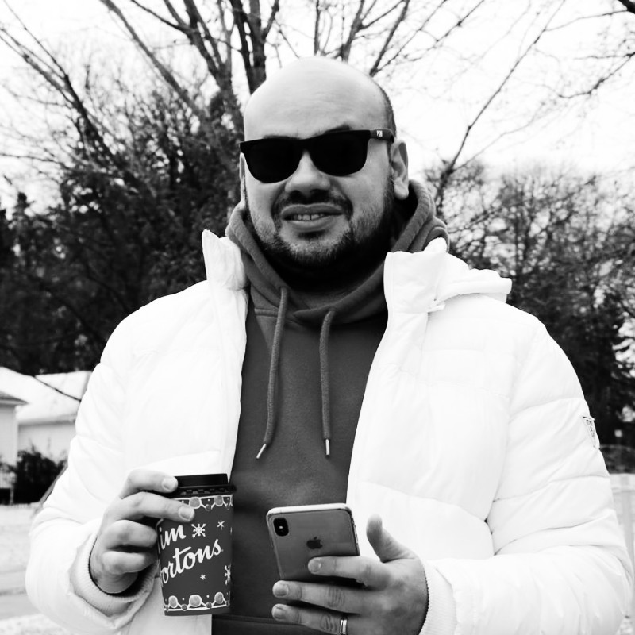

<!-- About 1 - Bootstrap Brain Component -->
<section class="py-3 py-md-5 py-xl-8">
  <div class="container">
    <div class="row gy-3 gy-md-4 gy-lg-0 align-items-lg-center">
      <div class="col-12 col-lg-6 col-xl-5">
        
      </div>
      <div class="col-12 col-lg-6 col-xl-7">
        <div class="row justify-content-xl-center">
          <div class="col-12 col-xl-11">
            <h2 class="h1 mb-3">Who Am I?</h2>
            <p class="lead fs-4 text-primary mb-3">From practicing law in Brazil to mastering Full Stack development in Canada, my journey stands as a testament to the transformative power of every experience in our relentless pursuit of knowledge and growth.</p>
            <p>Hello there! I'm Antonio Felipe Vieira, or simply Antonio or Felipe, whichever you prefer. My journey thus far has been a rollercoaster of experiences and learning curves. Hailing from Brazil with a background in Law, I took a leap of faith and moved to Canada back in August 2017.</p>
            <p>Since then, I've navigated through a variety of roles, from office cleaning to steering the wheel as an Uber driver. I even ran my own small transfer and city tour company, specializing in trips to the breathtaking Niagara Falls.</p>
            <p>In 2020, I decided to dive headfirst into a new realm: technology. I enrolled at Centennial College, graduating as a Software Engineering Technician. During my academic journey, I also had the privilege of supporting Amazon's logistics team at one of their distribution centers in Toronto.</p>
            <p>Post-graduation, I ventured further into the world of ultrasound manufacturing, where I honed my skills in various technologies including C#, JavaScript, Angular, web applications, and SQL.</p>
            <p>One notable project involved the development of a robust web application tailored for our production team. This application streamlined the process of creating and managing production forms, equipping our team with comprehensive options for data input and implementing logic to guide them through steps or escalate issues as necessary. This initiative significantly minimized errors and improved productivity within our manufacturing environment, while also contributing to environmental sustainability by reducing paper usage.</p>
            <p>In fact, it led to the conservation of thousands of sheets of paper annually, reflecting our commitment to a more eco-friendly approach in a world where sustainability is increasingly crucial.</p>
            <p>Furthermore, I spearheaded the modernization of our company's website, integrating an API to facilitate the creation of job postings and enable direct application submissions through the website. This innovative approach streamlined our recruitment process, attracting top talent and fostering a more seamless experience for both applicants and hiring managers.</p>
            <p>Lately, I've been immersing myself in the realm of cloud computing, particularly with AWS, earning my first certification in the field.</p>
            <p>Beyond my professional journey, I'm a proud husband and father to an adorable baby boy, who serves as my main source of inspiration and motivation.</p>
            <p class="text-center">Welcome to my journey as a budding developer in Canada!</p>
          </div>
        </div>
      </div>
    </div>
  </div>
</section>
